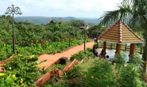

Have any question?
Dial toll free No: +12 365 5233

ABOUT DISTRICT
Malappuram: A treasure trove of natural beauty
Malappuram is virtually an emerald suspended from the verdant Nilgiris. An exotic ecological niche, it nestles between the sparkling diamonte sea and the blue green Nilgiri heights. The district is rich in forest cover which extends in area of about 760 square kilometers. Of this wide expanse about half which is 325 square kilometers belongs to the reserved forest category while the remaining 434 square kilometers comes under the vested forests territory. In fact, Malappuram gets its name from the combination of the two words ‘mala’ or hill and ‘puram’ or top signifying that its location is at the top of a hill. Malappuram is situated atop a terraced hill that provides a vantage point for the city dwellers.

KottakkunnuSituated near the district collectorate in Malappuram, Kottakkunnu, is a recently developed tourist spot in the district. Kottakkunnu derives its name from an old fort, which was built by the Zamorins of Kozhikode (in Malayalam kotta means fort and kunnu means hill). One can still find here traces of this fort.The Municipality of Malappuram City has started Kottakkunnu Amusement park - a water theme park in the valley of Kottakunnu. Visitors are allowed up to 9 p.m. Nearby Kottakkunnu is the famous Vettakkorumakan temple and the Siva temple with several murals of Malabar.

Kozhippara waterfalls :Set in the lush green surroundings, Kozhippara waterfalls is situated on the Kozhikode - Malappuram border. This waterfall is the best choice for adventure tourists. The spot is idel for swimming and trekking. One of the less explored tourist destinations, Kozhippara falls is on the Kuthradampuzha River.Set in the lush green surroundings, Kozhippara waterfalls is situated on the Kozhikode - Malappuram border. This waterfall is the best choice for adventure tourists. The spot is idel for swimming and trekking. One of the less explored tourist destinations, Kozhippara falls is on the...more

Nilambur: most popularly known as the land of teak plantations, is a famous town in Malappuram district. The place is noted for its vast expanse of forest along with its varied wildlife habitats, rivers and waterfalls. It is situated close to the Nilgiri range of the Western Ghats on the banks of the Chaliyar River. Considered to be the oldest in the world, the teak plantation here obtained its name after H.V. Conolly, the Malabar district collector during the British rule. He was instrumental in planting teak in the entire Nilambur area. Chathu Menon, a forest officer under Conolly, organised the hectic task of...more

The Thirumandhamkunnu temple: dedicated to Goddess Durga, is yet another popular pilgrim destination in Malappuraram district. One can find numerous mural paintings on the walls of this temple that depict its origin. Meanwhile, the epic Ramayana is portrayed through sculptures engraved on the ceiling. The temple is known for its annual pooram festival celebrated during March / April that attracts large numbers of devotees. A unique custom here is the arrival of Vellaithiri to the pooram ground to give audience to the Malayankutty, the headman of the Pana tribal...more